Spherical Limits are the most common constraint because most bones have their
freedom of movement restricted in some manner: for example, your elbows do not
bend backwards. Spherical Limits also help you while you are animating because
as you drag a character’s arm, the elbow won’t bend backwards, (so you don’t
have to adjust it later).
Spherical Limits are the most common constraint because most bones have their
freedom of movement restricted in some manner: for example, your elbows do not
bend backwards. Spherical Limits also help you while you are animating because
as you drag a character’s arm, the elbow won’t bend backwards, (so you don’t
have to adjust it later).
When you first add spherical constraints to a figure in an action or pose, its constraints are set to completely free. A completely free bone is accomplished by allowing longitude to run anywhere from -180 to 180° (creating a full 360° movement sphere).
Pictorially, this means that were the figure in the center of the Earth, the bone is allowed to point towards any of the vertically oriented time zones. In addition, the Latitude is allowed to go from 0 (straight down to the South Pole), to 180° (straight up to the North Pole). Figure 1 shows an unconstrained movement sphere. The Properties Panel is included for reference.
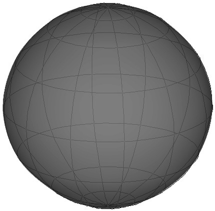
Latitude Constraints: By constraining the Latitude, a bones ability to move up and down its sphere is restricted. For example, possible constraints for a thigh would be to leave Longitude -180 to 180°, and restrict Latitude to 0-45°. Now the leg may lift up in any direction, but may only lift up 45°. It can lift 45° in front, back, at the right or left side. This creates a vertical cone of freedom. See figure 2. The Properties Panel and a view of the leg raised up to the spherical constraint are included for reference.
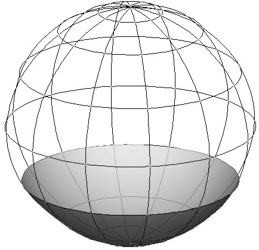
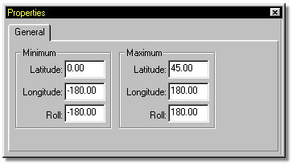
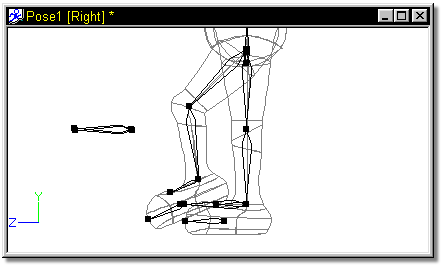
A characters upper arms can be constrained in exactly this fashion. Latitude can be set at 0-95°, allowing them to move the entire southern hemisphere, plus 5° further. In this case, the southern hemisphere is not straight down, rather it is to the right for the right arm since the bone is oriented in the arm horizontally. See Figure 3. The Properties Panel was included for reference.
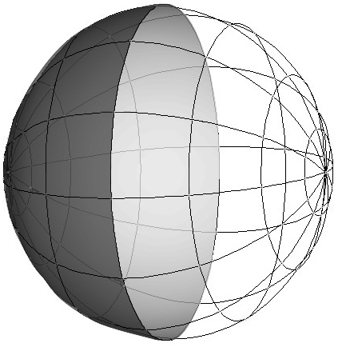
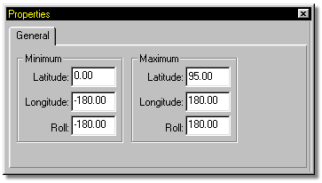
Latitude may also be restricted both Min and Max. For example, a bone can be constrained to point only at the sun belt, say from 60-135°. See Figure 4.
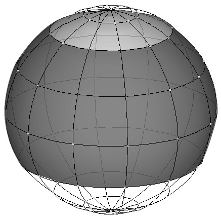
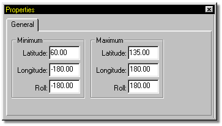
Longitude Constraints
By default, longitude constraints are -180 to 180°. Looking down on the movement sphere (using the face of a clock for reference), the 0° position is straight towards the back (6 o’clock). The positive 90° position is counter clockwise to the left (3 o’clock), the positive 180° position is towards the front (12 o’clock), and the 270° (or -90°) position is at the right (9 o’clock). When setting Longitude constraints, values from -360 to 360° may be used provided that the defined sphere is equal to or less than 360° total. This extra space is needed to set constrained regions which cross over 0°.
To constrain a calf, it is necessary to limit movements on the back side of the movement sphere. By leaving the Latitude at its default 0 to 180°, the calf may point anywhere from straight down to straight up. By setting the Longitude constraints from -5 to 5°, the calf must stay in a 10° wide strip towards the back. See Figure 5. The Properties Panel was included for reference.
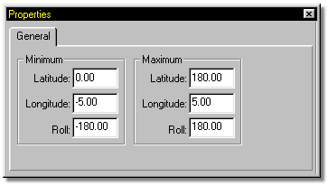
The Min and Max values of -5 and 5° will not show up at all if the calf is positioned straight down. (The South Pole is the South Pole no matter what time zone you are in) If you move the bone up higher, say a Latitude of 80°, then -5 to 5° Longitude constraints will be easily visible.
Latitude and Longitude Constraints: Because it is impossible for a person to move their calf all the way straight up, the above constraint would be more realistic if we set the Max Latitude to 140°. See Figure 6.
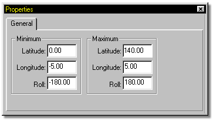
Negative Latitude Values:
Many people can hyper extend their knee joint and allow their calf to angle past straight down. Usually, the legal range for Min Latitude is 0 to 180°. However, if a narrow Longitude region (less than 180°) is specified, as in the previous calf example (only 10°), then negative values of Min Latitude are allowed. The negative Min Latitude allows the calf to extend to the opposite side of the movement sphere, in this case the front, as many degrees as you wish. Assuming our figure has extremely flexible knee joints, we could specify Latitude constraints of -10 to 140°. Now our region extends past the bottom of the sphere. See Figure 7.
Careful observation of the figure showing the calf constraints above will reveal that at the bottom of the movement sphere (the South Pole), the constraint region does not get narrow to a point like a bow tie. A wider example makes this more apparent. For instance, assume Longitude constraints of 60 to 120°. (See Top View Diagram) Suppose latitude values are from -45 to 90°. The positive Latitude constraint (90) is allowed on the side of the sphere that the Longitude constraints specify. The negative Latitude constraint (-45) is allowed directly across (60+180 to 120+180 = 240 to 300°). Connecting these limits by two vertical planes creates a wide patch region in which positioning is allowed. This situation is worth mentioning because often in a Pose or Action, longitude values outside 60-120° and 240 to 300° will be allowed to permit motion in this region.
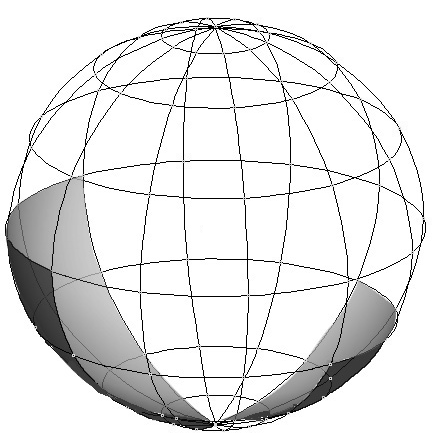
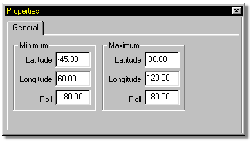
The previously discussed four constraint numbers, allow many different constrained regions to be defined. The Roll axis of a bone can also be constrained, with values ranging from -180 to 180°.
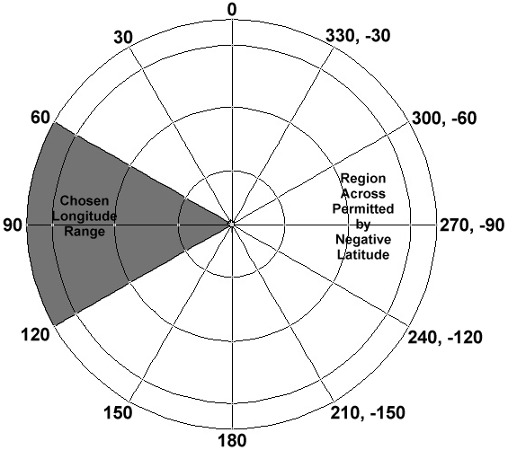
Tell Me About:
About Constraints
"Aim At" Constraints
"Kinematic" Constraints
"Path" Constraints
"Translate To" Constraints
"Orient Like" Constraints
"Aim Roll At" Constraints
Blending Constraints
Constraint Order
Animating Constraints
Targets
Circular Constraints